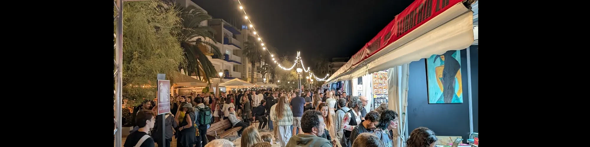
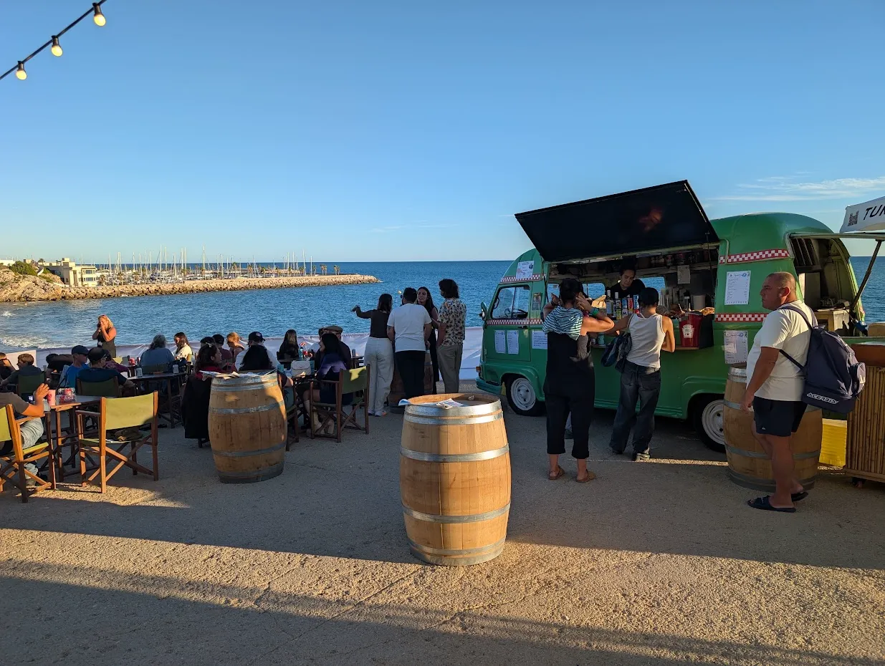
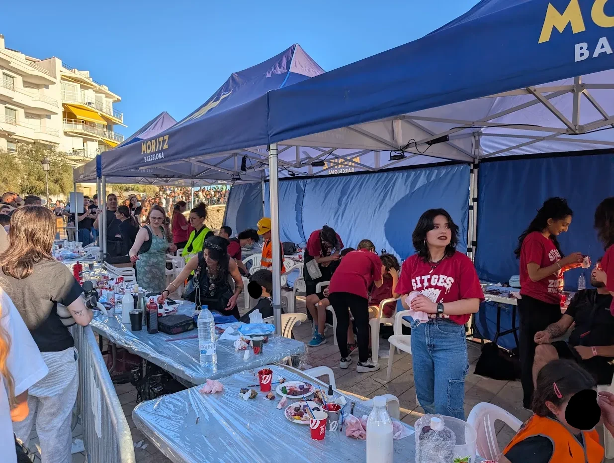
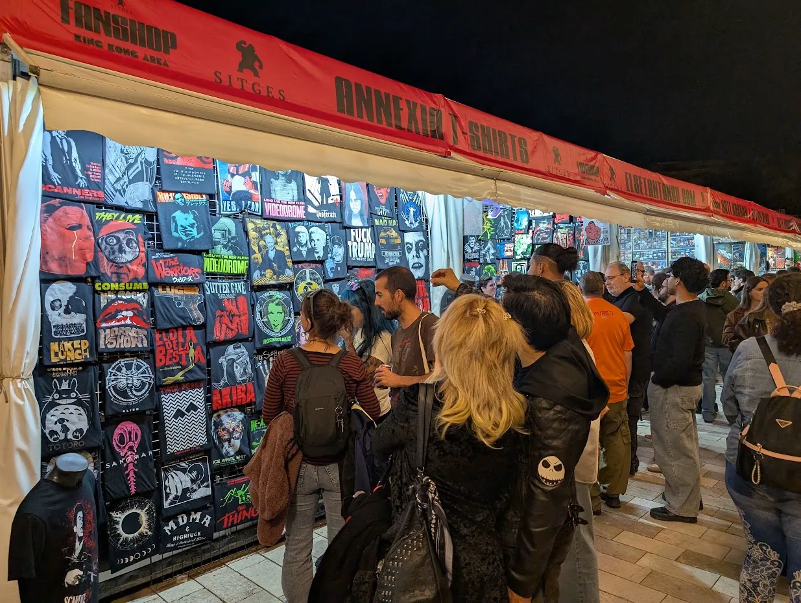
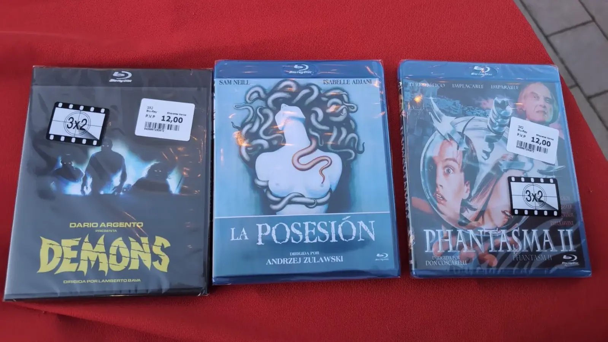

Sitges 2026 día 2 y 3 - Maratón, Jess Franco y compras
Día 2
La primera semana del festival de cine fantástico de Sitges ha durado lo mismo que un adolescente en un slasher de los 80; supongo que haber conseguido entradas para 3 de los 7 días puede haber influido en esa impresión.
Y es que cada año la batalla por conseguir una butaca se recrudece, te conectas en el minuto 00:00:01 y ya estás en cola, en el puesto 5000. Suerte con ello.
Os conté en una entrada anterior como había ido el primer día con el visionado de her private hell. Ahora que he juntado otra vez las ganas de escribir os traigo el resto de la semana, de la semana que viví yo, claro...
El segundo día del festival, el viernes 9 de octubre, asistí junto a un amigo a la maratón La nit del terror, en la que se proyectaron tres películas, de las cuales pude ver una y media.
Y es que pocos hooligans del cine aguantarían una maratón si, tras correrse el telón, les esperaran dos horas de drama familiar con elementos de Thriller policiaco y, licántropos.
Hablo de The Cycle, película dirigida por Jordan Downey, un tipo que participó en la archiconocida saga V/H/S con V/H/S Beyond, una entrega que apenas podría resumir hoy, aunque sí sé que disfruté durante su proyección en el festival de terror de Molins de Rei.
Con lo anterior no quiero que se me malinterprete: la película no es mala ni mucho menos. Sabe jugar con el espectador sin ser tramposa, lo cual ya me parece un mérito a estas alturas. Además, el desarrollo de los personajes y sus interpretaciones —te miro a ti, Deborah Ann Woll— están realmente logrados, a pesar de algún cliché que, francamente, tampoco le afea demasiado.
En definitiva, The Cycle es una cinta que, si me la pones a las 20:00, hora a la que la gente cuerda suele ir al cine, me la como junto con las palomitas y probablemente salga de la sala lo suficientemente contento como para abrir Letterboxd y calzarle unas merecidas estrellas. Pero no me aguanta una maratón. Ni yo tampoco y menos una que empieza a la 01:00 de la madrugada.
Cuando terminó The Cycle, me sequé el reguero de baba de la barba y hablé con el amigo que me acompañaba sobre la posibilidad de irnos a casa. La pseudo-siesta a intervalos irregulares no me había quitado el sueño y ya eran más de las tres de la mañana. Lo hablamos un poco y decidimos darle una breve oportunidad a la siguiente película: Half, una cinta india de un director llamado Samjad, de quien no había oído hablar en mi vida y que tenía una pinta de serie B que tiraba para atrás. Así que me dije: oye, ¿por qué no?
Y bueno, me sorprendió para bien. Os cuento la movida: dos hermanos, el guaperas y la sorda, inmortales por algún giro de la trama que pasó inadvertido por mi soñolienta cabeza, emprenden un viaje en coche por el desierto y acaban siendo abordados por la familia de The Texas Chain Saw Massacre en una versión hindi de Mad Max, llena de gore, kung-fu y estética de videoclip dosmilero. Una chorrada divertidísima.
Terminada esta segunda película, eran ya cerca de las cinco de la mañana y decidimos que era buen momento para irnos a casa a dormir y dejar que los más valientes vieran la tercera y última película de la maratón: Hallowarrior, de Ben Sottak, que, bueno, me queda pendiente para cuando la estrenen en cines o en plataformas.
Día 3
El día 3, para mí, corresponde al sábado 10 de octubre.
Digo «para mí» porque como ya he dicho, no puedo asistir a todos los días del festival: me faltan entradas, tiempo y dinero, y tampoco puedo contaros algo que no he vivido.
El sábado bajé a Sitges sobre las cinco de la tarde, acompañado del mismo amigo con el que vi la maratón, y dimos un paseo por los alrededores del hotel Melià mientras hacíamos tiempo para nuestra próxima película.

Ese día teníamos una reposición de una película de Jesús Franco a las siete de la tarde, así que, como de costumbre, nos íbamos a perder la famosa Zombie Walk, que empezaba a esa misma hora. Eso sí, pudimos admirar el gran trabajo de maquillaje que les hacían a los participantes en una de las paradas habilitadas para caracterizar a los muertos vivientes.

También aprovechamos para fichar alguna camiseta de cara al final del festi.

Había de todo: desde merchandising del festival con el logo de King Kong hasta criaturas extraterrestres estampadas, inspiradas en clásicos como The Thing y en títulos más modernos, como Obsession, con el rostro de Inde Navarrette y su sonrisa invertida. También había pequeños gags en forma de camiseta. Una frikada tremenda.
Pero todo mi presupuesto estaba reservado a mi parada preferida: la del 79, donde cada año me dejo el dinero en Blu-ray y este año no iba a ser la excepción. Y esto es lo que ha caído en la PRIMERA visita:

¿Nada mal, eh?
Hace bastante tiempo que quiero ver Demons de Lamberto Bava y que mejor que hacerlo en Blu-ray
Como os adelantaba antes, después de estas compras nos fuimos a ver una reposición de Bloody Moon en el Casino del Prado: un precioso teatro reconvertido en cine, con frescos en el techo de principios del siglo pasado. Una maravilla.
A la presentación de la película acudió un representante de Severin Films, la empresa que ha tomado la iniciativa de restaurar la cinta en 4K a partir de un rollo encontrado en un cine italiano abandonado. Nos contó que, curiosamente, esta película, que no fue más que un mero encargo comercial al director español Jesus Franco, se convertiría por méritos propios en una de las más recordadas de su filmografía.
La película es una mezcla de Bahía de sangre (Mario Bava, 1971) y Halloween (John Carpenter, 1978). Tal es el descaro de dicho remix que el asesino protagonista de este slasher pasado de vueltas se llama Miguel y sale de un psiquiátrico al inicio de la película.
A pesar de todo, fue una experiencia divertida. Me entraron ganas de revisar la filmografía del director y de asistir a más reposiciones en Sitges.
Y hasta aquí el resumen de los días 2 y 3. En la próxima entrada os contaré qué tal ha sido ver Wildwood y Bad Lieutenant Tokio, la nueva bizarrada de Takashi Miike.
EnRoot